CASE STUDY / BRANDING & PACKAGING
SPROUT
Branding Identity & Packaging Design
Sprout is a branding project for a candle brand focused on sustainability and environmental impact. The focus point of this project is how packaging can be transformed into a purposeful medium by infusing it with wildflower seeds, created from recycled paper which is biodegradable and when discarded it grows into bee friendly wild flowers.
My role involved designing the full brand identity and packaging system, using a bold yet natural visual language, combining lavender and lime green to reflect serenity and vibrance. Sprout is not just a product, it’s a statement on environmental responsibility, showing how design can educate and inspire.
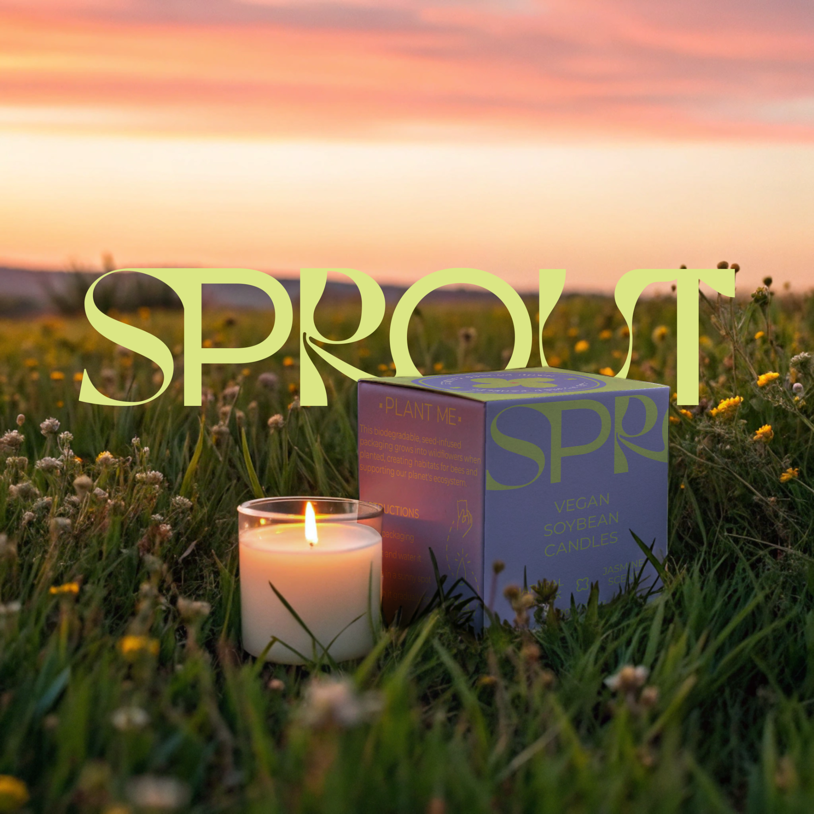
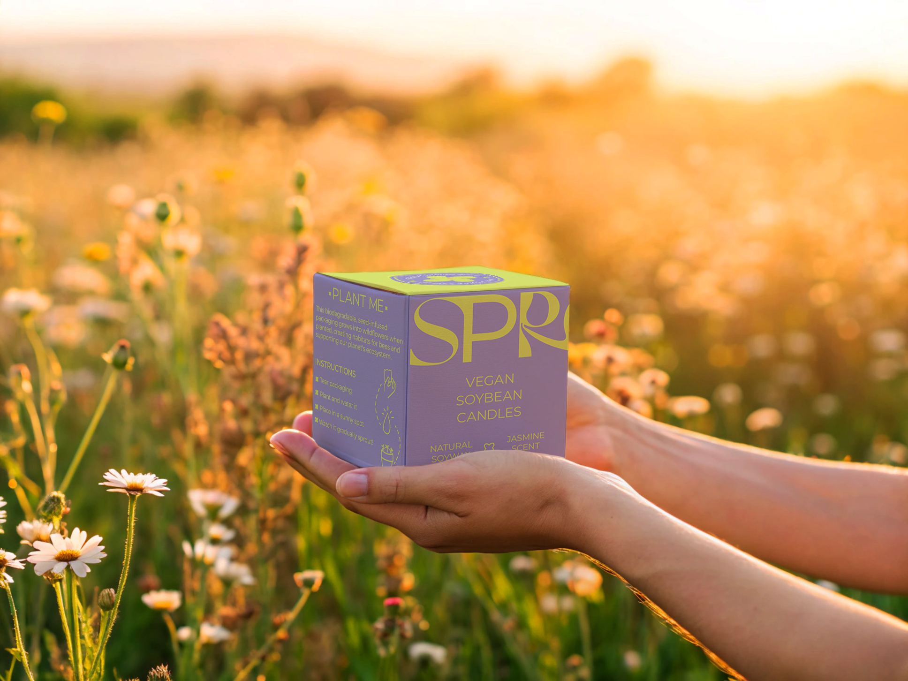
01 / BRAND FOUNDATIONS
Building
the identity.
The Sprout brand system balances a soft natural palette with distinctive typography and a playful supporting mark. Together these elements create a recognisable identity that feels eco-led, warm and contemporary.
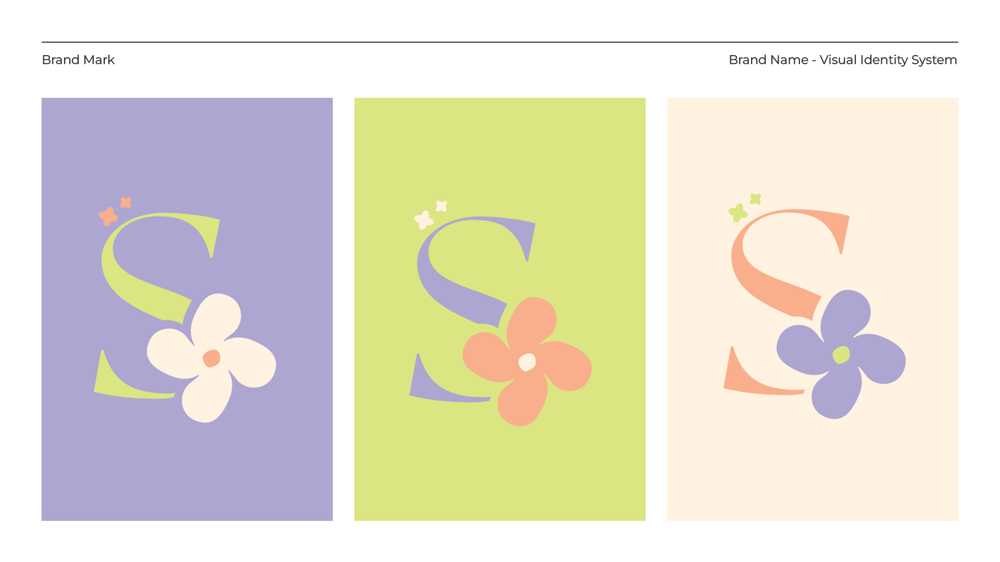
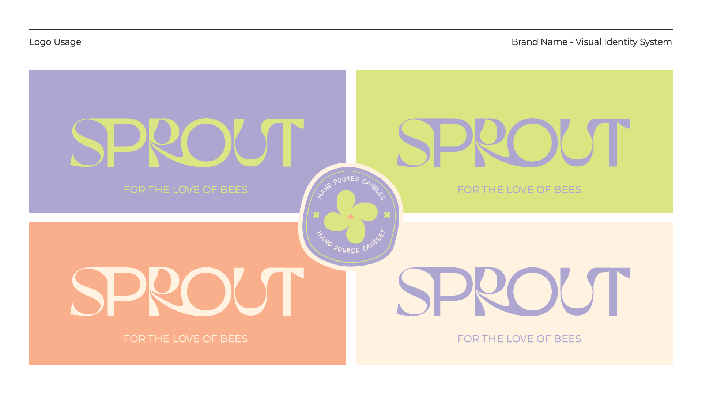
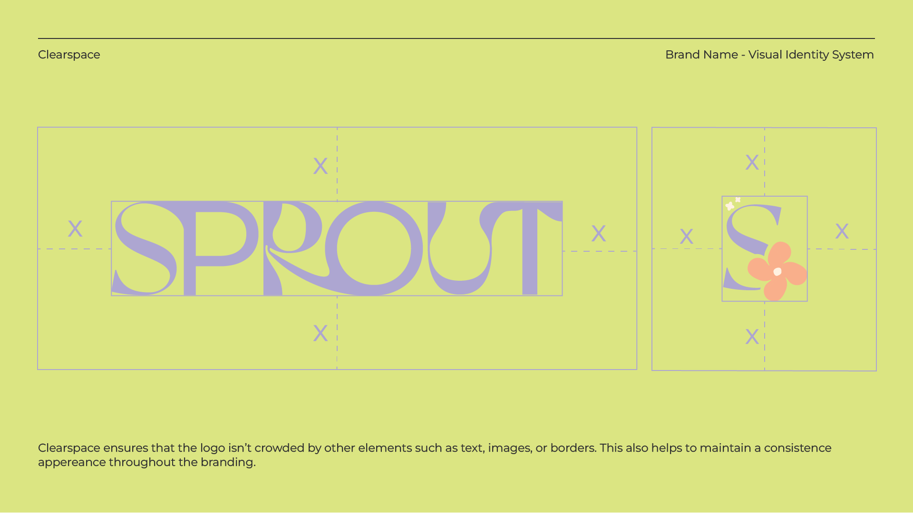
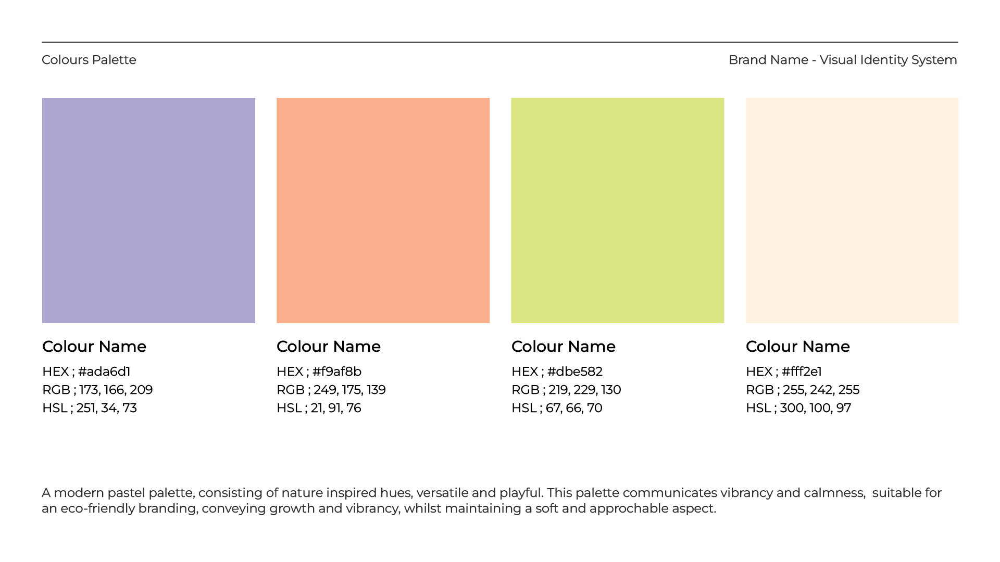
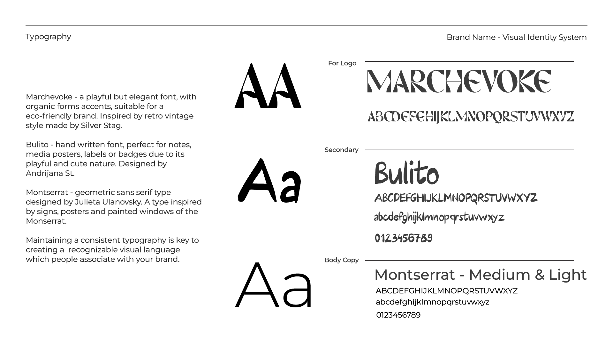
02 / PACKAGING & APPLICATION
From system
to product.
The identity translates into a packaging concept that feels tactile, giftable and distinctive. Mockups and lifestyle imagery help show how the brand works both as a product on shelf and as a wider visual world.
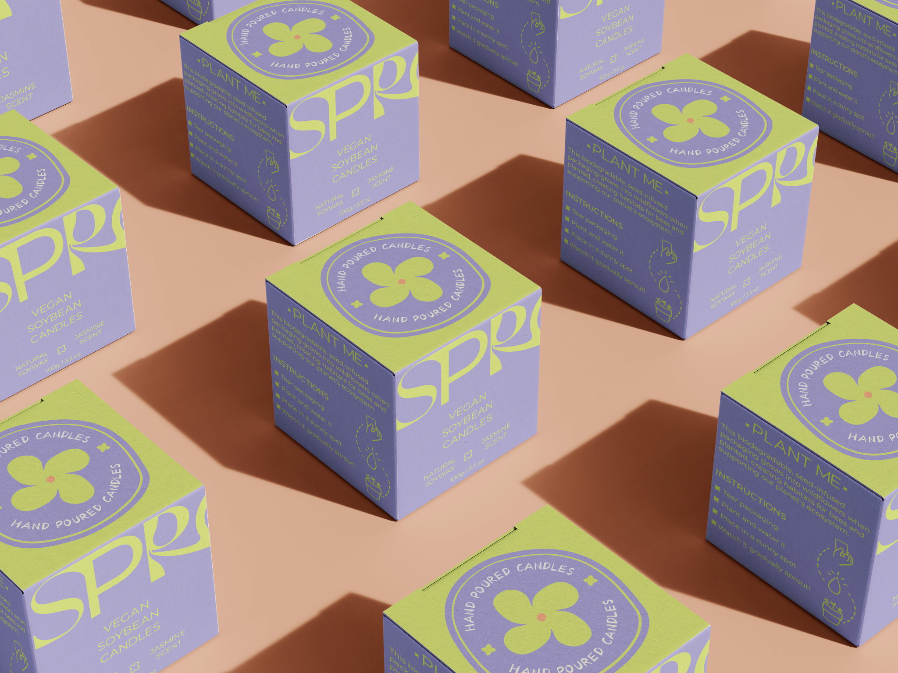
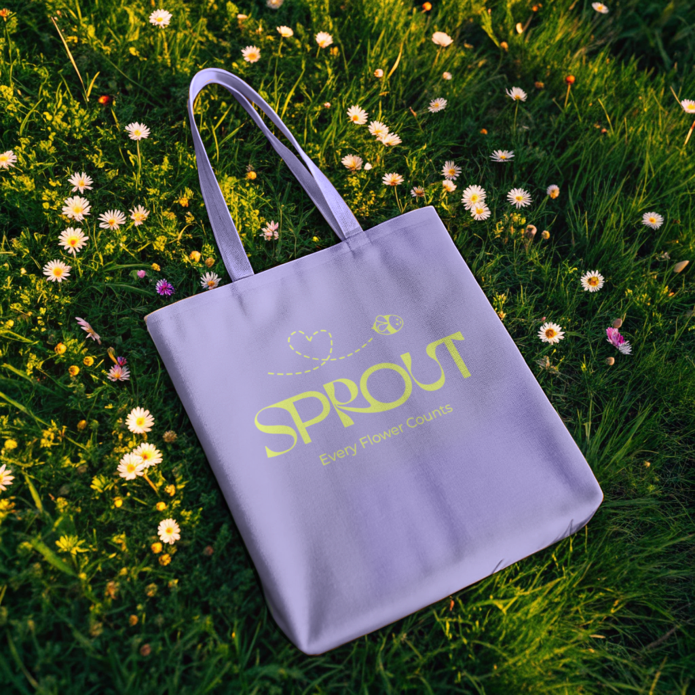
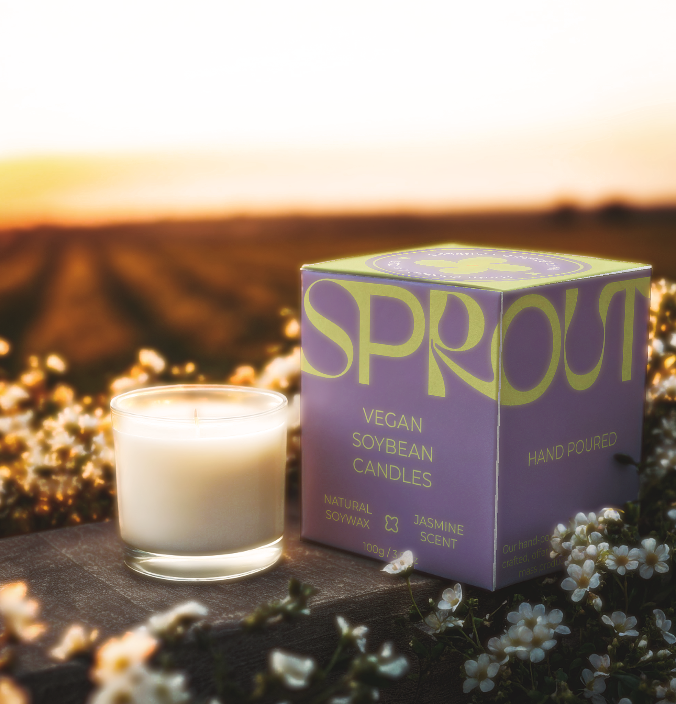
03 / PRINT COLLATERAL
Supporting
collateral.
Printed collateral extends the branding beyond the pack. The trifold brochure uses the same pastel palette, organic shapes and nature-led imagery to communicate the product story and sustainability message.
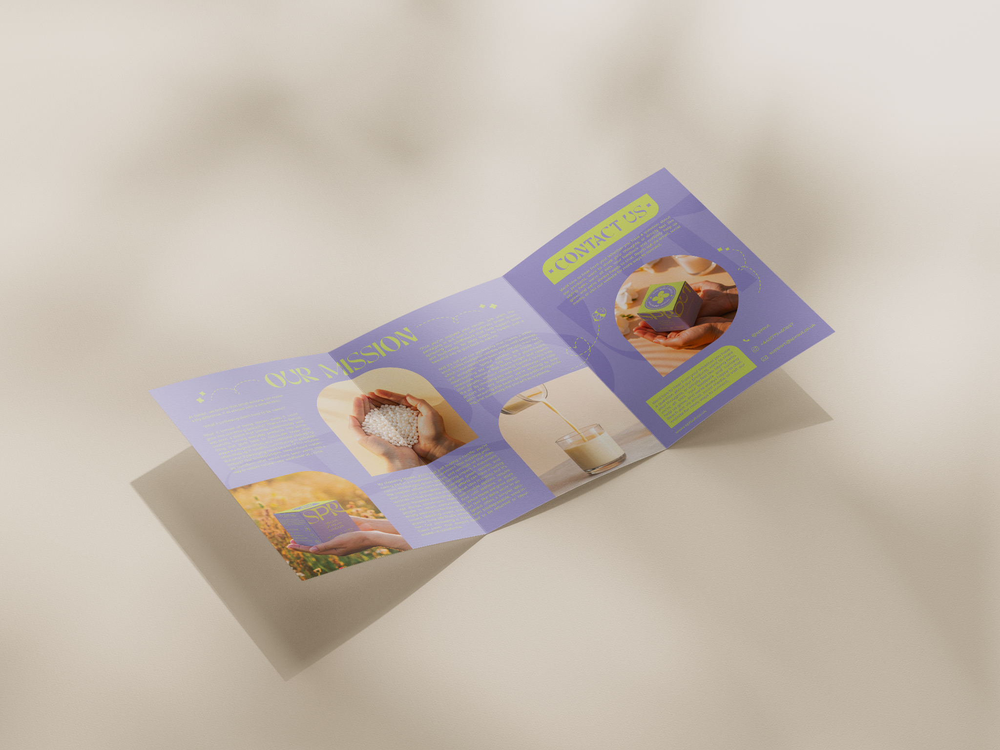
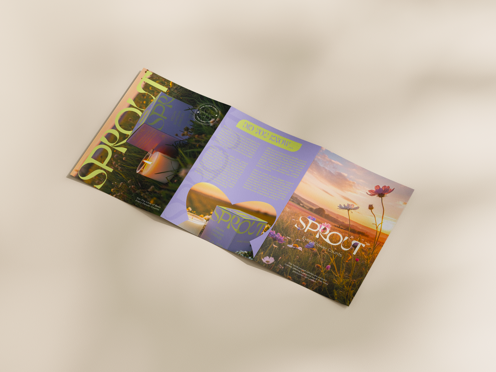
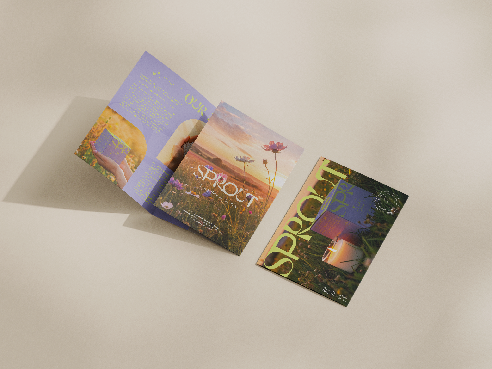
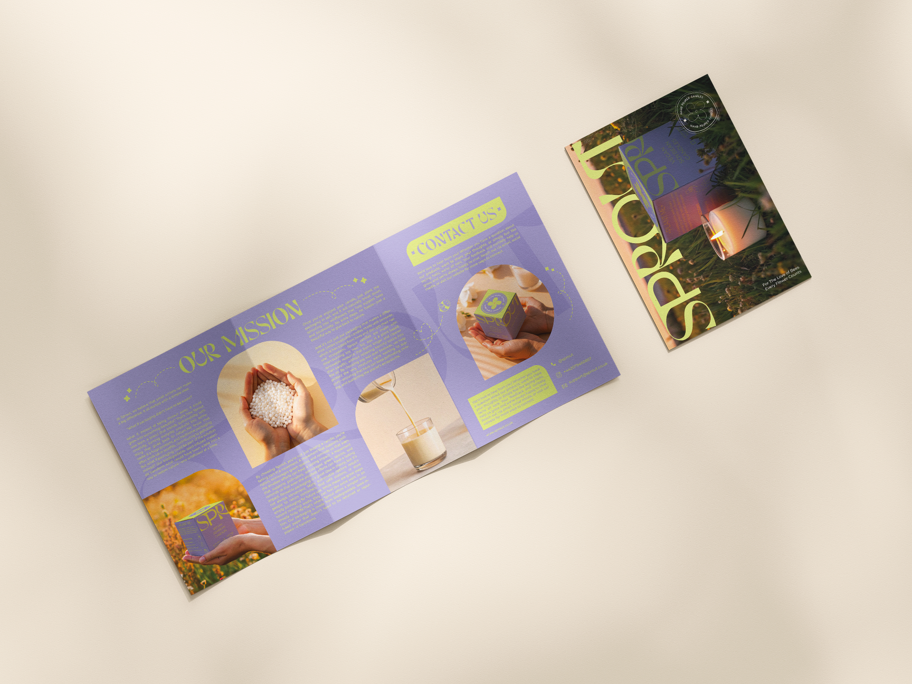